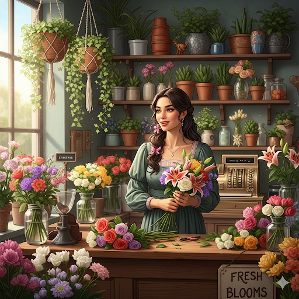

אודות
אילה ביקל, המייסדת של "פרח הגן", חיה ונושמת פרחים. עם ניסיון של למעלה מ-15 שנה בתחום העיצוב, היא בונה כל סידור באהבה ובמקצועיות בלתי מתפשרת. אילה התחילה את דרכה כגננת, שם גילתה את הכוח של פרח קטן לגעת בלב. לאחר הכשרות באיטליה ובהולנד, פתחה את "פרח הגן" מתוך חזון של חוויה אישית לכל לקוח. כל זר כאן הוא סיפור של תשוקה, השראה ופריחה.